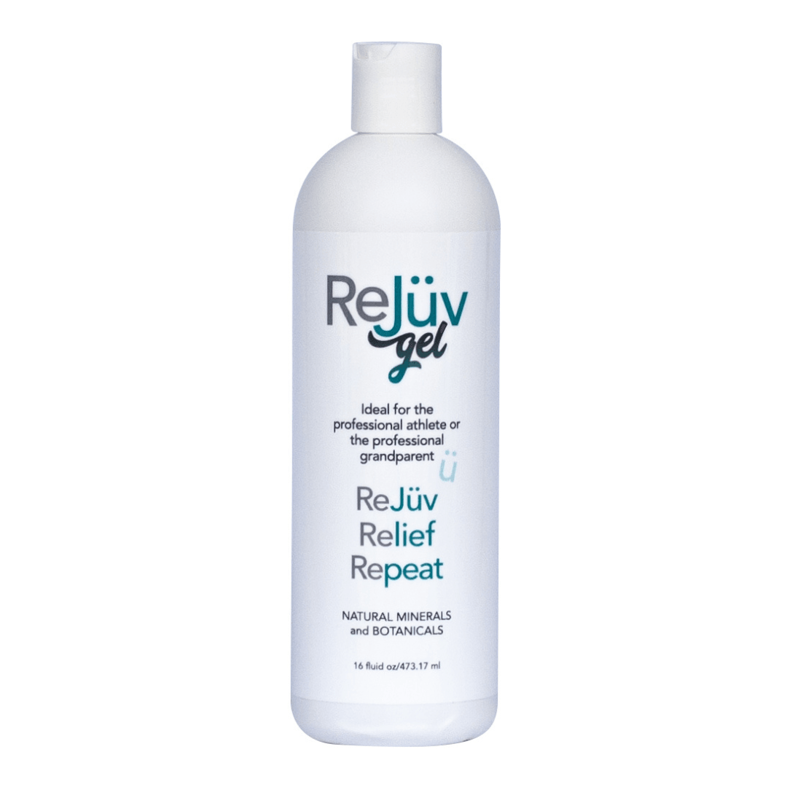

Horse liniment sits within arm’s reach in most barns, so riders naturally ask whether they can use it on themselves. The dependable answer starts with the product label.
Draw It Out® liniment is packaged for horse and livestock care. ReJüv™ is the Draw It Out® product made and labeled for people — menthol-free, capsaicin-free, low odor, and colorless.
Customer stories about using barn products are experiences, not human-use directions. When the product is for you, choose ReJüv™.
Choose the gel made for you, not your horse
ReJüv™ Gel · for people

A human-labeled topical gel for the routine you actually keep. The 16oz is the home-base bottle — lowest current retail cost per ounce in the ReJüv™ lineup.
- Made and labeled for people, not horses or dogs
- Menthol-free and capsaicin-free — no theatrical burn or sting
- Low odor and colorless
- Use on intact skin, follow the current label, and stop if irritation occurs
It is not a drug and not a substitute for medical evaluation. Check the label. Start with clean, dry skin. Let it dry before covering.
Get ReJüv™ for your own recovery routine
Week 7 recap
After today, this full schedule stays open for arrears completion. Proposed activities this week:
- Explore Draw It Out and submit a product pick · proposed 15 pts
- Add a recovery baseline note in the app · proposed 10 pts
- Submit a recovery question to the Draw It Out team · proposed 10 pts
- Determine which products could support your horse and barn · 5 pts
- GPS hand walk or ride anytime this week · proposed 5 pts × 2